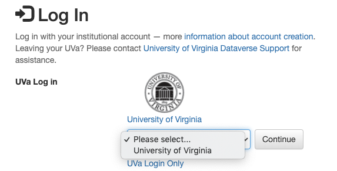

LibraData Account Creation & Management¶
As a registered UVA user, you can:
- Add datasets to dataverses.
- Contribute to existing datasets, if available.
- Request and/or access to restricted files, if available.
Login for UVA Users (required for UVA depositors)¶
Authenticated UVA users log in through NetBadge:
- In the top right corner of each page, click on the Log In link.
- Choose the UVA icon, or “University of Virginia” in the pulldown menu and click Continue. 
- Sign in with your UVa Netbadge Credentials.
The first time you sign in to LibraData, you must accept the LibraData Deposit Terms. The University expects that you read the terms before confirming your agreement. You can see the terms here: http://www.library.virginia.edu/libra/datasets/public-dataset-license/.

Account Information¶
To access your account page, click on your name in the header on the right hand side.
My Data¶
The My Data section of your account page displays a listing of all the datasets, and files you have either created, uploaded or that you have access to edit. You are able to filter through all the datasets, and files listed there using the filter box or use the facets on the left side to only view a specific Publication Status or Role.
Note
The “My Data” portion of LibraData (Dataverse) does not work in the current version. Harvard IQSS, developers of Dataverse, are working on a fix. ALSO note that the “Add Data” button will not work on LibraData. To add a dataset, please start at the LibraData homepage.
Notifications: Setup & Maintenance¶
Notifications appear in the notifications tab on your account page and are also displayed as a number next to your account name.
You will receive a notification when:
- You’ve created your account
- You’ve added a dataset
- Another Dataverse user has requested access to a restricted file in one of your datasets
- A file in one of your datasets has finished the ingest process
Notifications will only be emailed one time even if you haven’t read the notification on the Dataverse site.
API Token¶
What APIs Are and Why They Are Useful¶
API stands for “Application Programming Interface”. See LibraData admin libra@virginia.edu if you want to see what integrations LibraData has with other software.
How Your API Token Is Like a Password¶
In many cases, such as when depositing data, an API Token is required to interact with Dataverse APIs. The word “token” indicates a series of letters and numbers such as c6527048-5bdc-48b0-a1d5-ed1b62c8113b. Anyone who has your API Token can add and delete data as you so you should treat it with the same care as a password.
How to Create Your API Token¶
- To create your API token, click on your name in the header on right hand side and then click on “API Token”.
- In this tab, you can create your API Token for the first time as well as recreate it if you need a new API Token or your API Token becomes compromised.
How to Recreate Your API Token¶
If your API Token becomes compromised or has expired, click on your account name in the navbar, then select “API Token” from the dropdown menu. In this tab, click “Recreate Token”.
Additional Information about API Tokens and Dataverse APIs¶
Dataverse APIs are documented on Harvard’s Dataverse Project site: Getting Started with APIs.